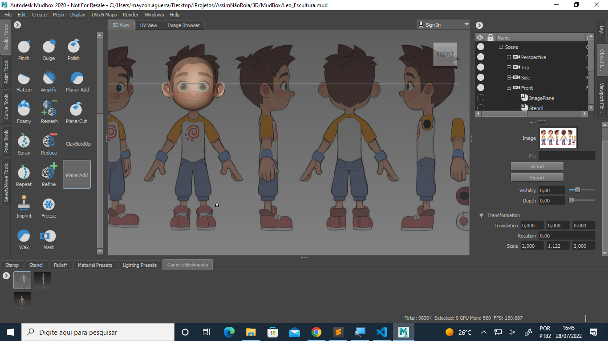
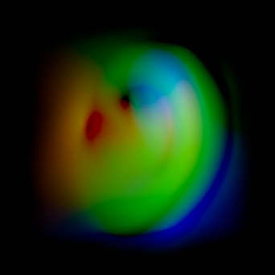

MudBox

Esculpindo - Referências
- Não reduzir muito os tamanhos dos objetos
- Os pincéis dependem do tamanho do objeto
- Adicionar as imagens de Referências nas câmeras side e front
- Definir os image planes para uma escala confortável (2, 1.122, 2)
- Posicionar a esfera e travar as vistas do modelo

VDM (Vector Displacement Map)
